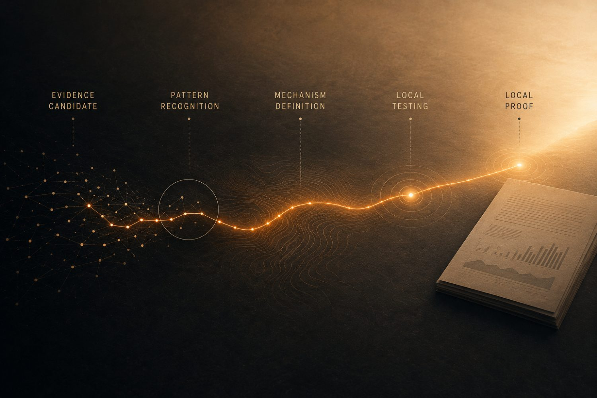

When ADHD is left waiting,
addiction steps in.
And it does not come quietly.
Untreated ADHD can become self-medication. Self-medication can become addiction. Addiction becomes pain — relapse, despair, family loss, crisis and system cost. Dean found a way out by treating the driver underneath. OTOS is the connection he proved in his own case: find the cohort earlier, route the ADHD clinically, and hold the thread until the right support finally lands.

Thank you for asking for more. This brief is short on purpose: a private strategic advisory brief, not a formal investment memorandum. It is about an unidentified, unacknowledged and high-cost cohort the system already sees and already pays for — adults whose addiction, relapse, repeat A&E contact, family breakdown or service drift may be driven by untreated or under-treated ADHD beneath the visible crisis.
Dean was one of them. His ADHD was already in the story, but it was not held as the driver. After seven years of waiting, he engineered a private route back to proper ADHD treatment. Once medicated correctly, the addiction work, therapy, recovery education and structure finally started to land. That sequence created OTOS.
The opportunity is not another recovery app. It is a bespoke non-clinical infrastructure layer, independent of patient records, that tests whether this cohort can be identified earlier, routed to the right ADHD clinical door, wrapped in continuity, and measured for engagement, relapse risk, follow-through and avoidable cost. NIA — Neurologically Informed Addiction — is the proposed founder-originated name for the pattern. It is not an official diagnosis. ADHD-driven addiction is the plain-English cohort; NIA is the category signal; OTOS Continuity™ is the infrastructure that tests whether the missing thread can be held. The ask is not blanket fundraising — it is a serious route-pressure-test of which first path is safest, fastest and most valuable to prove or stop.
Clinically known, operationally lost — seen by many services, held by none.
Reactive spend in A&E, detox, rehab, policing, courts, family breakdown and lost productivity.
ADHD, addiction, alcohol liaison, VCSE, clinical partners and public-health routes around one thread.
A bounded evidence route for NIA — consent, audit trail, learning report and outcome signals.
Engagement, follow-through, appointment visibility — and the chance recovery work lands in time.
Silent drift, missed handoffs, repeat presentations and unsupported waiting.

A large share of adults with untreated or under-treated ADHD self-medicate. Many find their way into addiction services; few get the ADHD half identified or treated in time. The gap between "you're on the list" and "you're being held" is where drift, relapse and devastation happen. We are already paying for this failure — just in the worst possible places. Dean recovered by engineering a route the system should have had — creating the conditions for detox, securing the letter, reaching the psychiatrist, restarting ADHD treatment, then watching the recovery work finally land. OTOS exists so the next person does not have to design their own rescue route from inside crisis. Founder proof is not population proof.

In a consultant psychiatrist's letter addressed by name to the CPFT ADHD Team, one sentence describes the entire cohort.
That sentence is the cohort. Not ADHD and alcohol use treated as two separate problems — adult ADHD, complicated by self-medication. Treating the alcohol alone left the driver underneath untouched; recognising and treating the ADHD is what finally let the rest of the work hold. The letter is medical correspondence about Dean — not an endorsement of OTOS, and not proof that OTOS works — but it documents that the mechanism is real in a lived pathway.
So why is this cohort still drifting between services — and why aren't we actively holding them while they wait? That is what this demonstrator is built to test.

The services did help — but they had to help him off-pathway, because the named pathway did not exist. Good people improvised a route the system had not built. Help that depends on improvisation cannot be relied on, or scaled. A person can be clinically known and still operationally lost — known to services is not the same as held between services. The failure was not bad people. It was the absence of a named route.
And one more truth the recovery makes plain: the work was not wrong — Dean's brain could not use it yet. Once the ADHD was treated, the same courses, CBT, recovery education and structure became usable. That is the sequence OTOS protects: identify the driver, hold the person while the clinical route catches up, then make sure the right support is there for the moment it can finally land.
Did not exist
No route was designed to hold someone whose ADHD was driving the addiction.
Drift & repeat
Relapse, repeat presentation, A&E, family breakdown — the cost lands everywhere except where it started.
You are not being asked to back something speculative and alone. Around this cohort, Dean is building a team of services — and the approaches are now being prepared in writing, in the language of each service, not just talked about. Partner briefs are prepared or being finalised for the CPFT ADHD Team, CGL & CRS, Alcohol Liaison at Addenbrooke's, RCE Wellbeing Hub, Mind / WorkWell / therapy, Dr Claire / LAMP and Public Health. Each asks for the right thing from that service: not endorsement, not procurement, not clinical risk — a careful conversation, written support where appropriate, and pressure-testing of the role it could safely play.
Partner PDFs are being prepared for service-specific written support and pressure-testing.
CGL and CRS keyworkers and team leaders already recognise the pattern and have been engaged informally.
The diagnostic letter gives the ADHD/self-medication mechanism in clinical language, and is being used to progress the NHS pathway.
Alcohol Liaison saw the gap directly: there was nowhere useful to send this pattern once it became visible.
RCE, Mind / WorkWell, therapy and Dr Claire / LAMP show how active waiting and human connection sit around the clinical pathway.
The cost case is framed as discovery, not procurement: can a 50-person, 12-week demonstrator test whether the thread holds?
There is already a live precedent on the addiction side: CGL has published practice-development work through Nottingham CVS on ADHD assessment within substance-use services — mapping the very barriers this cohort presents. OTOS does not duplicate that clinical work; it makes continuity visible between the addiction and ADHD pathways, so a cohort already recognised inside addiction settings can be routed and held rather than lost.
OTOS does not replace services. It makes the handoff, waiting period and drift between them visible enough for humans to act. Waiting is not neutral for this cohort: waiting without structure is where ADHD-driven drift becomes addiction-driven crisis — OTOS turns it into active continuity.

Dean is not pretending the route is already chosen. Six routes are open, each with a different first test — the next real risk is choosing the wrong route first. The Angel is not being asked to choose forever; the Angel is being asked to help pressure-test the first route.
This is not a new cost. It is a smarter use of money the system is already spending — reactively, repeatedly and across budget lines that rarely speak to each other. The cost does not disappear — it moves to a different budget line. A 50-person, 12-week demonstrator is an evidence budget, not a therapy budget: it exists to replace modelling with locally validated evidence.
£47bn / year
UK economic cost of alcohol and drugs. HM Government.
£17bn
Avoidable annual economic cost of untreated ADHD. NHS ADHD Taskforce, 2025.
≈£18m / year
Modelled avoidable demand if continuity improves outcomes. OTOS planning estimate — subject to local validation.

The research already says what the founder's life demonstrated. None of the figures below is an OTOS outcome — they are published evidence candidates and comparators the demonstrator is designed to test locally.
A small first cheque or strategic advisory support, sized to reach a credible proof-of-question over the next 9–12 months. Structure is open — SAFE, advance subscription, structured grant-with-rights or angel-syndicate — shaped by the conversation. This is not yet a formal raise, and there is no valuation or fixed terms on the table. This is the Angel opportunity: not just a service idea, but a new category, a new intervention model and a new infrastructure layer. NIA is not yet a market — that is why the first proof point matters.
- Protected founder time and a refined demonstrator design.
- Governance & data-protection prep, qualified clinical-partner scoping, and service-specific written-support requests drawn from the partner briefs.
- Evidence pack & route comparison — a 12-week readiness plan and a learning report to continue, pivot or stop.
- Dean cannot execute all routes at once — founder time is the bottleneck.
- Clinical governance must be shaped properly before any test.
- The first demonstrator route must be chosen carefully.
- Partner interest must become written support without overstating endorsement.
- NIA is powerful but must be evidenced safely.
- The right advisor helps choose the framework, not dictate the vision.
OTOS is early-stage, pre-pilot and non-clinical. NIA is proposed founder-originated terminology — not an official diagnosis.
Does not diagnose ADHD, prescribe, manage medication, treat addiction, deliver therapy, replace any NHS / CGL / CPFT / CRS / GP / psychiatry / recovery / VCSE / public-health / crisis service, make clinical decisions, or act as an EPR.
Founder proof is not population proof. Published figures are evidence candidates, not OTOS outcomes. The clinical letter is medical correspondence, not an endorsement. Modelled figures are potential, not guaranteed savings.
No partner endorsement, approved pilot, procurement, NHS, CPFT, CGL, CRS, Public Health, LAMP, RCE, Mind / WorkWell or AstraZeneca support is assumed unless explicitly confirmed in writing.
Any future work is subject to governance, consent, data protection, safeguarding, qualified clinical leadership and proper commercial / legal review.
OTOS surfaces signals; partner teams make the decisions. That boundary is the design, not a disclaimer bolted on after.
If any of this is interesting, the next step is simple: a 30-minute exploratory call with Dean and Gareth. No deck, no pitch theatre — just the founder, the mechanism, the candidate demonstrator, the partner-readiness position, and an honest conversation about which route to test first.
Advisory call
Pressure-test the route and the category — 30 minutes with Dean and Gareth.
Strategic advisor
Help shape the first-route framework and avoid the wrong turn, if fit is real.
Early backer
Potentially underwrite the bounded proof-of-question if the fit is real.
The ask is not approval of the company — it is critique of the seam: does this route hold, which first door should open, and what would make the demonstrator safe enough to test properly? A small first cheque or advisory support would underwrite a bounded 12-week demonstrator — any number subject to final costing. If a formal advisory role is discussed, Dean expects to compensate fairly, potentially through a small advisory-equity arrangement or equivalent, subject to proper legal and commercial review.